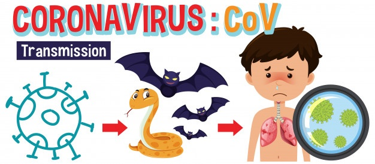
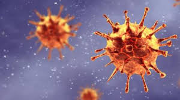
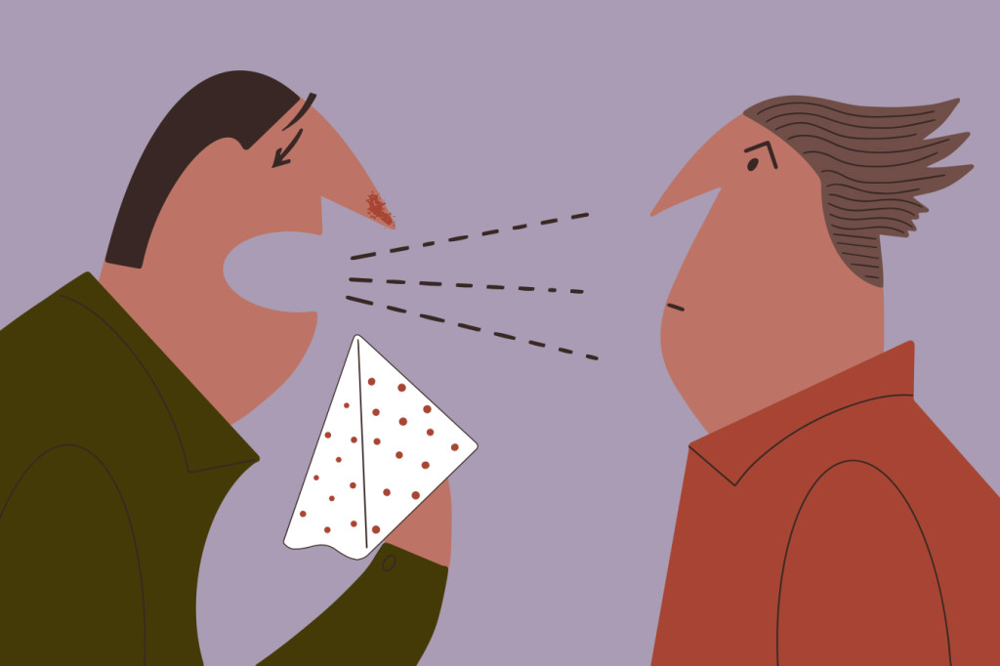

Coronavirus
Los coronavirus son una extensa familia de virus que pueden causar enfermedades tanto en animales como en humanos. En los humanos, se sabe que varios coronavirus causan infecciones respiratorias que pueden ir desde el resfriado común hasta enfermedades más graves como el síndrome respiratorio de Oriente Medio (MERS) y el síndrome respiratorio agudo severo (SRAS). El coronavirus que se ha descubierto más recientemente causa la enfermedad por coronavirus COVID-19.
La COVID 19 es la enfermedad infecciosa causada por el coronavirus que se ha descubierto más recientemente. Tanto este nuevo virus como la enfermedad que provoca eran desconocidos antes de que estallara el brote en Wuhan (China) en diciembre de 2019. Actualmente la COVID 19 es una pandemia que afecta a muchos países de todo el mundo.
Una persona puede contraer la COVID 19 por contacto con otra que esté infectada por el virus. La enfermedad se propaga principalmente de persona a persona a través de las gotículas que salen despedidas de la nariz o la boca de una persona infectada al toser, estornudar o hablar. Estas gotículas son relativamente pesadas, no llegan muy lejos y caen rápidamente al suelo. Una persona puede contraer la COVID 19 si inhala las gotículas procedentes de una persona infectada por el virus. Por eso es importante mantenerse al menos a un metro (3 pies) de distancia de los demás. Estas gotículas pueden caer sobre los objetos y superficies que rodean a la persona, como mesas, pomos y barandillas, de modo que otras personas pueden infectarse si tocan esos objetos o superficies y luego se tocan los ojos, la nariz o la boca. Por ello es importante lavarse las manos frecuentemente con agua y jabón o con un desinfectante abase de alcohol.
La OMS está estudiando las investigaciones en curso sobre las formas de propagación de la COVID 19 y seguirá informando sobre las conclusiones que se vayan obteniendo.
